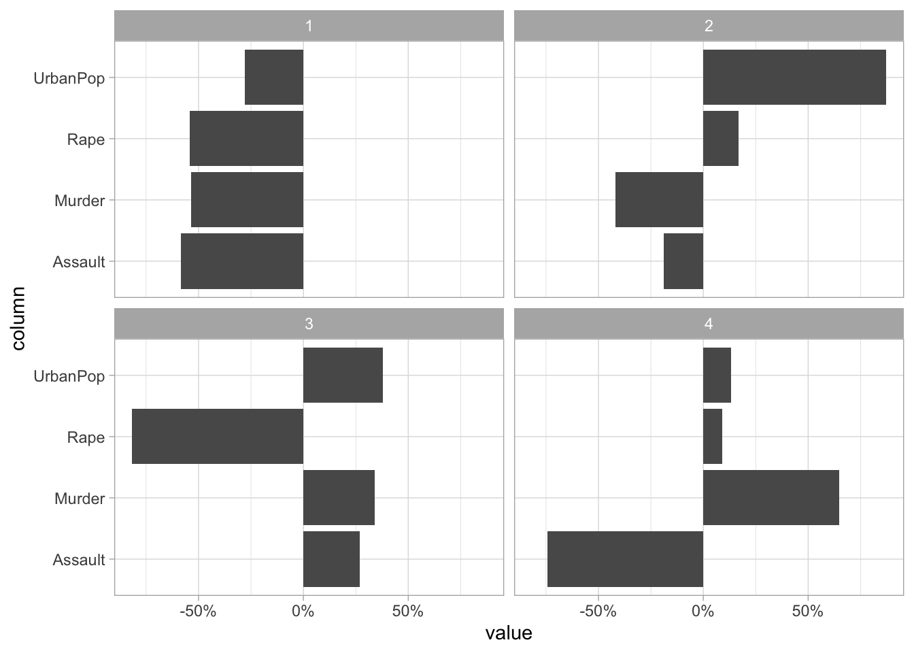
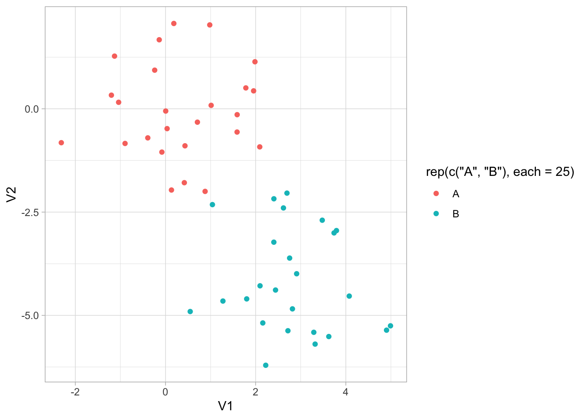
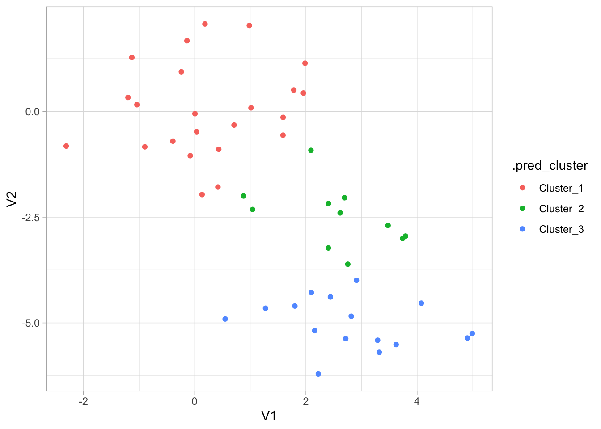
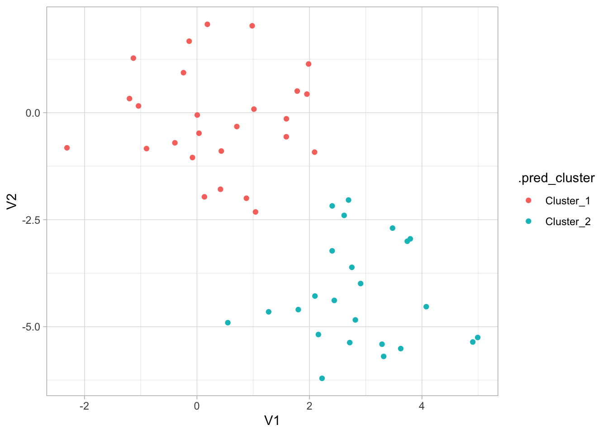
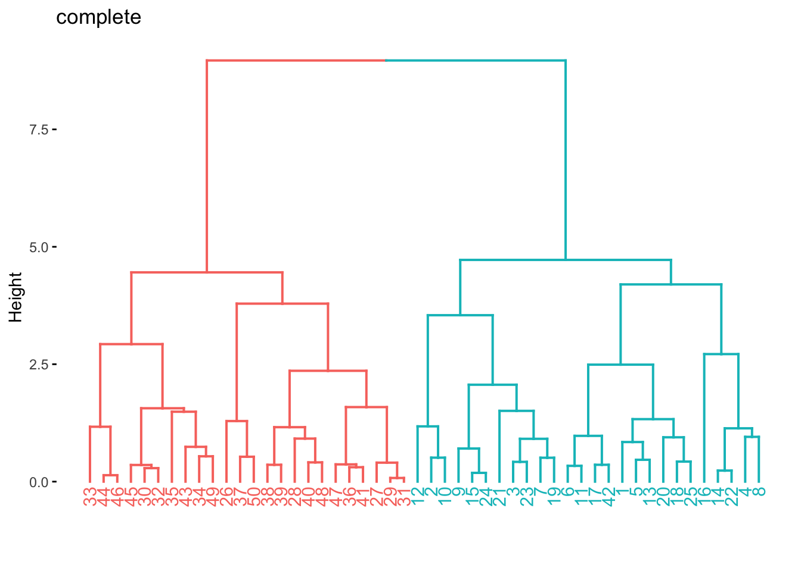
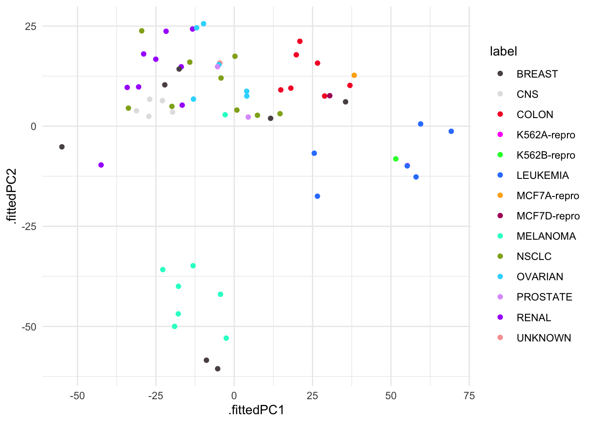
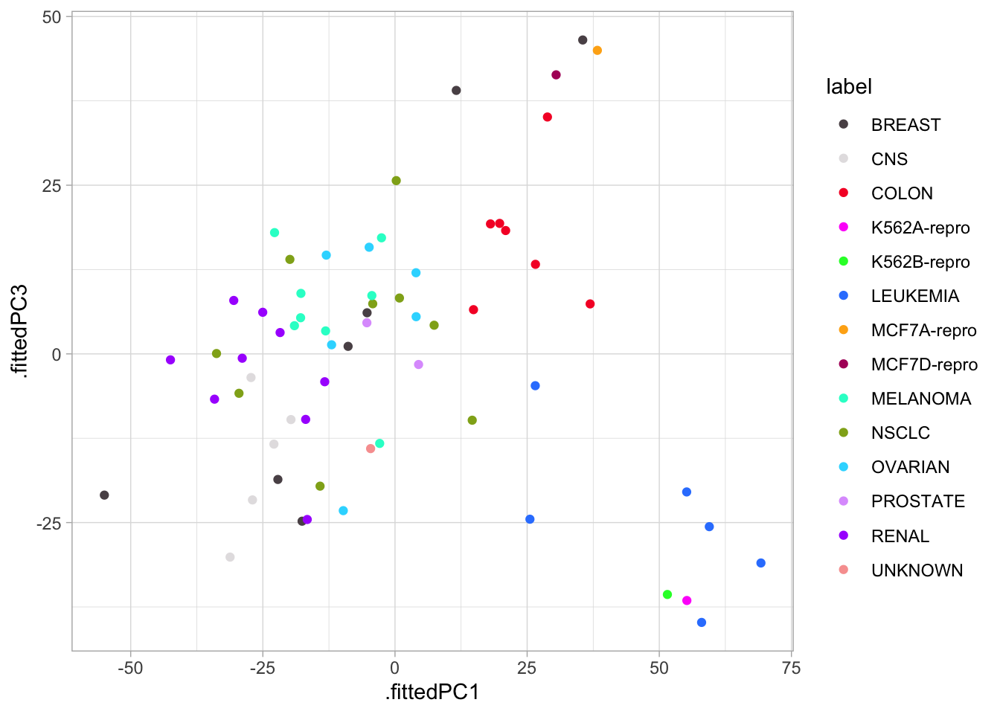
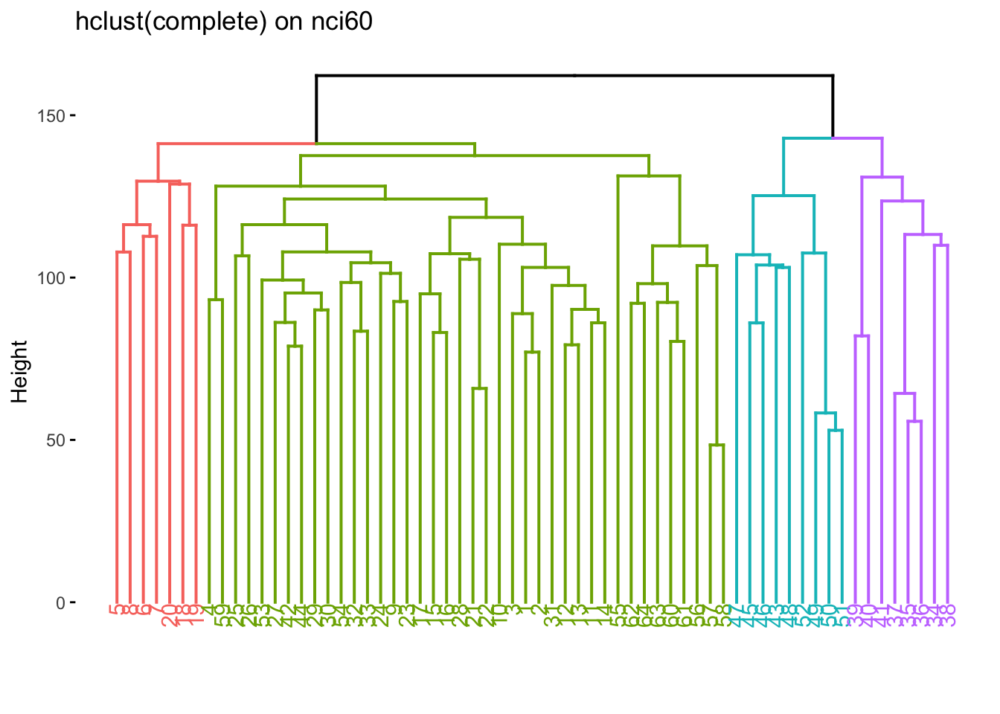
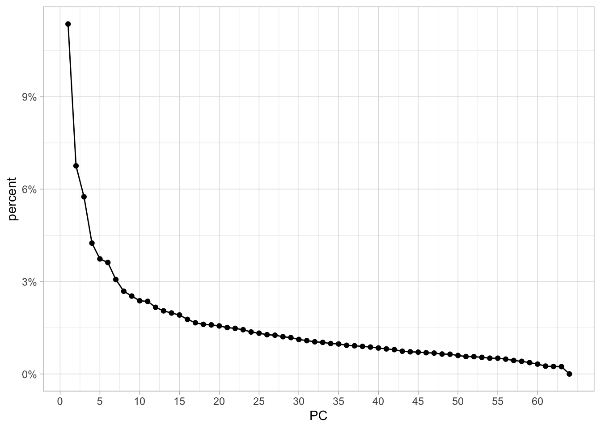
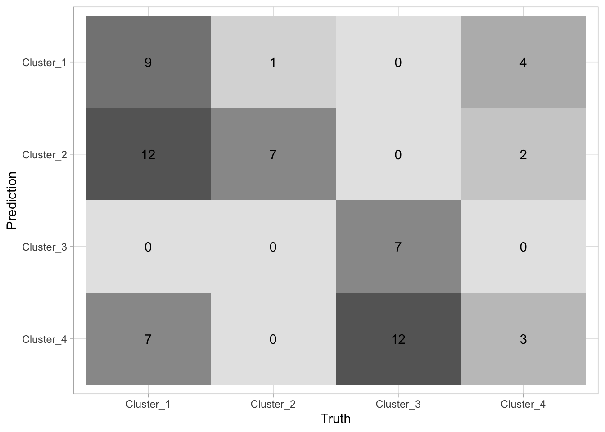

12 Unsupervised Learning
This final chapter talks about unsupervised learning. This is broken into two parts. Dimensionality reduction and clustering. Dimensionality reduction will be handled mostly as a preprocessor which is done with recipes package, and clustering is done with the tidyclust package.
12.1 Principal Components Analysis
This section will be used to explore the USArrests data set using PCA. Before we move on, let is turn USArrests into a tibble and move the rownames into a column.
USArrests <- as_tibble(USArrests, rownames = "state")
USArrests# A tibble: 50 × 5
state Murder Assault UrbanPop Rape
<chr> <dbl> <int> <int> <dbl>
1 Alabama 13.2 236 58 21.2
2 Alaska 10 263 48 44.5
3 Arizona 8.1 294 80 31
4 Arkansas 8.8 190 50 19.5
5 California 9 276 91 40.6
6 Colorado 7.9 204 78 38.7
7 Connecticut 3.3 110 77 11.1
8 Delaware 5.9 238 72 15.8
9 Florida 15.4 335 80 31.9
10 Georgia 17.4 211 60 25.8
# ℹ 40 more rowsNotice how the mean of each of the variables is quite different. if we were to apply PCA directly to the data set then Murder would have a very small influence.
# A tibble: 1 × 4
Murder Assault UrbanPop Rape
<dbl> <dbl> <dbl> <dbl>
1 7.79 171. 65.5 21.2We will show how to perform PCA in two different ways in this section. Firstly, by using prcomp() directly, using broom::tidy() to extract the information we need, and secondly by using recipes. prcomp() takes 1 required argument x which much be a fully numeric data.frame or matrix. Then we pass that to prcomp(). We also set scale = TRUE in prcomp() which will perform the scaling we need.
Standard deviations (1, .., p=4):
[1] 1.5748783 0.9948694 0.5971291 0.4164494
Rotation (n x k) = (4 x 4):
PC1 PC2 PC3 PC4
Murder -0.5358995 -0.4181809 0.3412327 0.64922780
Assault -0.5831836 -0.1879856 0.2681484 -0.74340748
UrbanPop -0.2781909 0.8728062 0.3780158 0.13387773
Rape -0.5434321 0.1673186 -0.8177779 0.08902432Now we can use our favorite broom function to extract information from this prcomp object. We start with tidy(). tidy() can be used to extract a couple of different things, see ?broom:::tidy.prcomp() for more information. tidy() will by default extract the scores of a PCA object in long tidy format. The score is the location of the observation in PCA space. So we can
tidy(USArrests_pca)# A tibble: 200 × 3
row PC value
<int> <dbl> <dbl>
1 1 1 -0.976
2 1 2 -1.12
3 1 3 0.440
4 1 4 0.155
5 2 1 -1.93
6 2 2 -1.06
7 2 3 -2.02
8 2 4 -0.434
9 3 1 -1.75
10 3 2 0.738
# ℹ 190 more rowsWe can also explicitly say we want the scores by setting matrix = "scores".
tidy(USArrests_pca, matrix = "scores")# A tibble: 200 × 3
row PC value
<int> <dbl> <dbl>
1 1 1 -0.976
2 1 2 -1.12
3 1 3 0.440
4 1 4 0.155
5 2 1 -1.93
6 2 2 -1.06
7 2 3 -2.02
8 2 4 -0.434
9 3 1 -1.75
10 3 2 0.738
# ℹ 190 more rowsNext, we can get the loadings of the PCA.
tidy(USArrests_pca, matrix = "loadings")# A tibble: 16 × 3
column PC value
<chr> <dbl> <dbl>
1 Murder 1 -0.536
2 Murder 2 -0.418
3 Murder 3 0.341
4 Murder 4 0.649
5 Assault 1 -0.583
6 Assault 2 -0.188
7 Assault 3 0.268
8 Assault 4 -0.743
9 UrbanPop 1 -0.278
10 UrbanPop 2 0.873
11 UrbanPop 3 0.378
12 UrbanPop 4 0.134
13 Rape 1 -0.543
14 Rape 2 0.167
15 Rape 3 -0.818
16 Rape 4 0.0890This information tells us how each variable contributes to each principal component. If you don’t have too many principal components you can visualize the contribution without filtering
tidy(USArrests_pca, matrix = "loadings") %>%
ggplot(aes(value, column)) +
facet_wrap(~ PC) +
geom_col() +
scale_x_continuous(labels = scales::percent)
Lastly, we can set matrix = "eigenvalues" and get back the explained standard deviation for each PC including as a percent and cumulative which is quite handy for plotting.
tidy(USArrests_pca, matrix = "eigenvalues")# A tibble: 4 × 4
PC std.dev percent cumulative
<dbl> <dbl> <dbl> <dbl>
1 1 1.57 0.620 0.620
2 2 0.995 0.247 0.868
3 3 0.597 0.0891 0.957
4 4 0.416 0.0434 1 If we want to see how the percent standard deviation explained drops off for each PC we can easily get that by using tidy() with matrix = "eigenvalues".
Lastly, we have the augment() function which will give you back the fitted PC transformation if you apply it to the prcomp() object directly
augment(USArrests_pca)# A tibble: 50 × 5
.rownames .fittedPC1 .fittedPC2 .fittedPC3 .fittedPC4
<chr> <dbl> <dbl> <dbl> <dbl>
1 1 -0.976 -1.12 0.440 0.155
2 2 -1.93 -1.06 -2.02 -0.434
3 3 -1.75 0.738 -0.0542 -0.826
4 4 0.140 -1.11 -0.113 -0.181
5 5 -2.50 1.53 -0.593 -0.339
6 6 -1.50 0.978 -1.08 0.00145
7 7 1.34 1.08 0.637 -0.117
8 8 -0.0472 0.322 0.711 -0.873
9 9 -2.98 -0.0388 0.571 -0.0953
10 10 -1.62 -1.27 0.339 1.07
# ℹ 40 more rowsand will apply this transformation to new data by passing the new data to newdata
augment(USArrests_pca, newdata = USArrests[1:5, ])# A tibble: 5 × 10
.rownames state Murder Assault UrbanPop Rape .fittedPC1 .fittedPC2 .fittedPC3
<chr> <chr> <dbl> <int> <int> <dbl> <dbl> <dbl> <dbl>
1 1 Alab… 13.2 236 58 21.2 -0.976 -1.12 0.440
2 2 Alas… 10 263 48 44.5 -1.93 -1.06 -2.02
3 3 Ariz… 8.1 294 80 31 -1.75 0.738 -0.0542
4 4 Arka… 8.8 190 50 19.5 0.140 -1.11 -0.113
5 5 Cali… 9 276 91 40.6 -2.50 1.53 -0.593
# ℹ 1 more variable: .fittedPC4 <dbl>If you are using PCA as a preprocessing method I recommend you use recipes to apply the PCA transformation. This is a good way of doing it since recipe will correctly apply the same transformation to new data that the recipe is used on.
We step_normalize() to make sure all the variables are on the same scale. By using all_numeric() we are able to apply PCA on the variables we want without having to remove state. We are also setting an id for step_pca() to make it easier to tidy() later.
By calling bake(new_data = NULL) we can get the fitted PC transformation of our numerical variables
pca_rec %>%
bake(new_data = NULL)# A tibble: 50 × 5
state PC1 PC2 PC3 PC4
<fct> <dbl> <dbl> <dbl> <dbl>
1 Alabama -0.976 -1.12 0.440 0.155
2 Alaska -1.93 -1.06 -2.02 -0.434
3 Arizona -1.75 0.738 -0.0542 -0.826
4 Arkansas 0.140 -1.11 -0.113 -0.181
5 California -2.50 1.53 -0.593 -0.339
6 Colorado -1.50 0.978 -1.08 0.00145
7 Connecticut 1.34 1.08 0.637 -0.117
8 Delaware -0.0472 0.322 0.711 -0.873
9 Florida -2.98 -0.0388 0.571 -0.0953
10 Georgia -1.62 -1.27 0.339 1.07
# ℹ 40 more rowsbut we can also supply our own data to new_data.
pca_rec %>%
bake(new_data = USArrests[40:45, ])# A tibble: 6 × 5
state PC1 PC2 PC3 PC4
<fct> <dbl> <dbl> <dbl> <dbl>
1 South Carolina -1.31 -1.91 0.298 -0.130
2 South Dakota 1.97 -0.815 -0.385 -0.108
3 Tennessee -0.990 -0.852 -0.186 0.646
4 Texas -1.34 0.408 0.487 0.637
5 Utah 0.545 1.46 -0.291 -0.0815
6 Vermont 2.77 -1.39 -0.833 -0.143 We can get back the same information as we could for prcomp() but we have to specify the slightly different inside tidy(). Here id = "pca" refers to the second step of pca_rec. We get the scores with type = "coef".
tidy(pca_rec, id = "pca", type = "coef")# A tibble: 16 × 4
terms value component id
<chr> <dbl> <chr> <chr>
1 Murder -0.536 PC1 pca
2 Assault -0.583 PC1 pca
3 UrbanPop -0.278 PC1 pca
4 Rape -0.543 PC1 pca
5 Murder -0.418 PC2 pca
6 Assault -0.188 PC2 pca
7 UrbanPop 0.873 PC2 pca
8 Rape 0.167 PC2 pca
9 Murder 0.341 PC3 pca
10 Assault 0.268 PC3 pca
11 UrbanPop 0.378 PC3 pca
12 Rape -0.818 PC3 pca
13 Murder 0.649 PC4 pca
14 Assault -0.743 PC4 pca
15 UrbanPop 0.134 PC4 pca
16 Rape 0.0890 PC4 pca And the eigenvalues with type = "variance".
tidy(pca_rec, id = "pca", type = "variance")# A tibble: 16 × 4
terms value component id
<chr> <dbl> <int> <chr>
1 variance 2.48 1 pca
2 variance 0.990 2 pca
3 variance 0.357 3 pca
4 variance 0.173 4 pca
5 cumulative variance 2.48 1 pca
6 cumulative variance 3.47 2 pca
7 cumulative variance 3.83 3 pca
8 cumulative variance 4 4 pca
9 percent variance 62.0 1 pca
10 percent variance 24.7 2 pca
11 percent variance 8.91 3 pca
12 percent variance 4.34 4 pca
13 cumulative percent variance 62.0 1 pca
14 cumulative percent variance 86.8 2 pca
15 cumulative percent variance 95.7 3 pca
16 cumulative percent variance 100 4 pca Sometimes you don’t want to get back all the principal components of the data. We can either specify how many components we want with num_comp (or rank. in prcomp())
recipe(~., data = USArrests) %>%
step_normalize(all_numeric()) %>%
step_pca(all_numeric(), num_comp = 3) %>%
prep() %>%
bake(new_data = NULL)# A tibble: 50 × 4
state PC1 PC2 PC3
<fct> <dbl> <dbl> <dbl>
1 Alabama -0.976 -1.12 0.440
2 Alaska -1.93 -1.06 -2.02
3 Arizona -1.75 0.738 -0.0542
4 Arkansas 0.140 -1.11 -0.113
5 California -2.50 1.53 -0.593
6 Colorado -1.50 0.978 -1.08
7 Connecticut 1.34 1.08 0.637
8 Delaware -0.0472 0.322 0.711
9 Florida -2.98 -0.0388 0.571
10 Georgia -1.62 -1.27 0.339
# ℹ 40 more rowsor using a threshold to specify how many components to keep by the variance explained. So by setting threshold = 0.7, step_pca() will generate enough principal components to explain 70% of the variance.
recipe(~., data = USArrests) %>%
step_normalize(all_numeric()) %>%
step_pca(all_numeric(), threshold = 0.7) %>%
prep() %>%
bake(new_data = NULL)# A tibble: 50 × 3
state PC1 PC2
<fct> <dbl> <dbl>
1 Alabama -0.976 -1.12
2 Alaska -1.93 -1.06
3 Arizona -1.75 0.738
4 Arkansas 0.140 -1.11
5 California -2.50 1.53
6 Colorado -1.50 0.978
7 Connecticut 1.34 1.08
8 Delaware -0.0472 0.322
9 Florida -2.98 -0.0388
10 Georgia -1.62 -1.27
# ℹ 40 more rows12.2 Matrix Completion
This section is WIP.
12.3 Kmeans Clustering
We will be using the tidyclust package to perform these clustering tasks. It was a similar interface to parsnip, and it interfaces well with the rest of tidymodels.
Before we get going let us create a synthetic data set that we know has groups.
And we can plot it with ggplot2 to see that the groups are really there. Note that we didn’t include this grouping information in x_df as we are trying to emulate a situation where we don’t know of the possible underlying clusters.
x_df %>%
ggplot(aes(V1, V2, color = rep(c("A", "B"), each = 25))) +
geom_point() +
labs(color = "groups")
Now that we have the data, it is time to create a cluster specification. Since we want to perform K-means clustering, we will use the k_means() function from tidyclust. We use the num_clusters argument to specify how many centroids the K-means algorithm need to use. We also set a mode and engine, which this time are set to the same as the defaults. We also set nstart = 20, this allows the algorithm to have multiple initial starting positions, which we use in the hope of finding global maxima instead of local maxima.
kmeans_spec <- k_means(num_clusters = 3) %>%
set_mode("partition") %>%
set_engine("stats") %>%
set_args(nstart = 20)
kmeans_specK Means Cluster Specification (partition)
Main Arguments:
num_clusters = 3
Engine-Specific Arguments:
nstart = 20
Computational engine: stats Once we have this specification we can fit it to our data. We remember to set a seed because the K-means algorithm starts with random initialization
This fitted model has a lot of different kinds of information.
kmeans_fittidyclust cluster object
K-means clustering with 3 clusters of sizes 11, 23, 16
Cluster means:
V1 V2
1 2.5355362 -2.48605364
2 0.2339095 0.04414551
3 2.8241300 -5.01221675
Clustering vector:
1 2 3 4 5 6 7 8 9 10 11 12 13 14 15 16 17 18 19 20 21 22 23 24 25 26
2 2 2 2 2 2 2 2 2 2 2 2 2 2 2 2 1 2 2 2 1 2 2 2 2 3
27 28 29 30 31 32 33 34 35 36 37 38 39 40 41 42 43 44 45 46 47 48 49 50
1 1 1 3 1 3 3 3 3 1 3 3 3 1 1 1 3 3 3 3 1 3 3 3
Within cluster sum of squares by cluster:
[1] 14.56698 54.84869 26.98215
(between_SS / total_SS = 76.8 %)
Available components:
[1] "cluster" "centers" "totss" "withinss" "tot.withinss"
[6] "betweenss" "size" "iter" "ifault" An otherall function to inspect your fitted tidyclust models is extract_fit_summary() which returns all different kind of information
extract_fit_summary(kmeans_fit)$cluster_names
[1] Cluster_1 Cluster_2 Cluster_3
Levels: Cluster_1 Cluster_2 Cluster_3
$centroids
# A tibble: 3 × 2
V1 V2
<dbl> <dbl>
1 0.234 0.0441
2 2.54 -2.49
3 2.82 -5.01
$n_members
[1] 23 11 16
$sse_within_total_total
[1] 54.84869 14.56698 26.98215
$sse_total
[1] 415.9045
$orig_labels
[1] 2 2 2 2 2 2 2 2 2 2 2 2 2 2 2 2 1 2 2 2 1 2 2 2 2 3 1 1 1 3 1 3 3 3 3 1 3 3
[39] 3 1 1 1 3 3 3 3 1 3 3 3
$cluster_assignments
[1] Cluster_1 Cluster_1 Cluster_1 Cluster_1 Cluster_1 Cluster_1 Cluster_1
[8] Cluster_1 Cluster_1 Cluster_1 Cluster_1 Cluster_1 Cluster_1 Cluster_1
[15] Cluster_1 Cluster_1 Cluster_2 Cluster_1 Cluster_1 Cluster_1 Cluster_2
[22] Cluster_1 Cluster_1 Cluster_1 Cluster_1 Cluster_3 Cluster_2 Cluster_2
[29] Cluster_2 Cluster_3 Cluster_2 Cluster_3 Cluster_3 Cluster_3 Cluster_3
[36] Cluster_2 Cluster_3 Cluster_3 Cluster_3 Cluster_2 Cluster_2 Cluster_2
[43] Cluster_3 Cluster_3 Cluster_3 Cluster_3 Cluster_2 Cluster_3 Cluster_3
[50] Cluster_3
Levels: Cluster_1 Cluster_2 Cluster_3We can also extract some of these quantities directly using extract_centroids()
extract_centroids(kmeans_fit)# A tibble: 3 × 3
.cluster V1 V2
<fct> <dbl> <dbl>
1 Cluster_1 0.234 0.0441
2 Cluster_2 2.54 -2.49
3 Cluster_3 2.82 -5.01 and extract_cluster_assignment()
extract_cluster_assignment(kmeans_fit)# A tibble: 50 × 1
.cluster
<fct>
1 Cluster_1
2 Cluster_1
3 Cluster_1
4 Cluster_1
5 Cluster_1
6 Cluster_1
7 Cluster_1
8 Cluster_1
9 Cluster_1
10 Cluster_1
# ℹ 40 more rowsprediction in a clustering model isn’t well defined. But we can think of it as “what cluster would these observations be in if they were part of the data set”. For the k-means case, it looks at which centroid these observations are closest to.
predict(kmeans_fit, new_data = x_df)# A tibble: 50 × 1
.pred_cluster
<fct>
1 Cluster_1
2 Cluster_1
3 Cluster_1
4 Cluster_1
5 Cluster_1
6 Cluster_1
7 Cluster_1
8 Cluster_1
9 Cluster_1
10 Cluster_1
# ℹ 40 more rowsLastly, we can see what cluster each observation belongs to by using augment(), which does the same thing as predict() but add it to the orginial data set. This makes it handy for EDA and plotting the results.
augment(kmeans_fit, new_data = x_df)# A tibble: 50 × 3
V1 V2 .pred_cluster
<dbl> <dbl> <fct>
1 -0.897 -0.838 Cluster_1
2 0.185 2.07 Cluster_1
3 1.59 -0.562 Cluster_1
4 -1.13 1.28 Cluster_1
5 -0.0803 -1.05 Cluster_1
6 0.132 -1.97 Cluster_1
7 0.708 -0.323 Cluster_1
8 -0.240 0.936 Cluster_1
9 1.98 1.14 Cluster_1
10 -0.139 1.67 Cluster_1
# ℹ 40 more rowsWe can visualize the result of augment() to see how well the clustering performed.
augment(kmeans_fit, new_data = x_df) %>%
ggplot(aes(V1, V2, color = .pred_cluster)) +
geom_point()
This is all well and good, but it would be nice if we could try out a number of different clusters and then find the best one. For this we will use tune_cluster(). tune_cluster() works pretty much like tune_grid() expect that it works with cluster models.
now we can use this workflow with tune_cluster() to fit it many times for different values of num_clusters.
set.seed(1234)
x_boots <- bootstraps(x_df, times = 10)
num_clusters_grid <- tibble(num_clusters = seq(1, 10))
tune_res <- tune_cluster(
object = kmeans_wf,
resamples = x_boots,
grid = num_clusters_grid
)And we can use collect_metrics() as before
tune_res %>%
collect_metrics()# A tibble: 20 × 7
num_clusters .metric .estimator mean n std_err .config
<int> <chr> <chr> <dbl> <int> <dbl> <chr>
1 1 sse_total standard 387. 10 8.86 Preprocessor1_M…
2 1 sse_within_total standard 387. 10 8.86 Preprocessor1_M…
3 2 sse_total standard 387. 10 8.86 Preprocessor1_M…
4 2 sse_within_total standard 121. 10 4.00 Preprocessor1_M…
5 3 sse_total standard 387. 10 8.86 Preprocessor1_M…
6 3 sse_within_total standard 82.6 10 2.29 Preprocessor1_M…
7 4 sse_total standard 387. 10 8.86 Preprocessor1_M…
8 4 sse_within_total standard 59.0 10 2.07 Preprocessor1_M…
9 5 sse_total standard 387. 10 8.86 Preprocessor1_M…
10 5 sse_within_total standard 43.8 10 1.99 Preprocessor1_M…
11 6 sse_total standard 387. 10 8.86 Preprocessor1_M…
12 6 sse_within_total standard 33.3 10 1.48 Preprocessor1_M…
13 7 sse_total standard 387. 10 8.86 Preprocessor1_M…
14 7 sse_within_total standard 25.0 10 1.25 Preprocessor1_M…
15 8 sse_total standard 387. 10 8.86 Preprocessor1_M…
16 8 sse_within_total standard 20.8 10 1.10 Preprocessor1_M…
17 9 sse_total standard 387. 10 8.86 Preprocessor1_M…
18 9 sse_within_total standard 17.0 10 1.00 Preprocessor1_M…
19 10 sse_total standard 387. 10 8.86 Preprocessor1_M…
20 10 sse_within_total standard 13.9 10 0.695 Preprocessor1_M…Now that we have the total within-cluster sum-of-squares we can plot them against k so we can use the elbow method to find the optimal number of clusters. This actually pops right out if we use autoplot() on the results.
We see an elbow when the number of clusters is equal to 2 which makes us happy since the data set is specifically created to have 2 clusters. We can now construct the final kmeans model
And we can finish by visualizing the clusters it found.
augment(final_kmeans, new_data = x_df) %>%
ggplot(aes(V1, V2, color = .pred_cluster)) +
geom_point()
12.4 Hierarchical Clustering
The hclust() function is one way to perform hierarchical clustering in R. It only needs one input and that is a dissimilarity structure as produced by dist(). Furthermore, we can specify a couple of things,
We will use the hier_clust() function from tidyclust to perform hierarchical clustering. We will keep all the defaults except for the agglomeration method. Let us cluster this data in a couple of different ways to see how the choice of agglomeration method changes the clustering.
res_hclust_complete <- hier_clust(linkage_method = "complete") %>%
fit(~., data = x_df)
res_hclust_average <- hier_clust(linkage_method = "average") %>%
fit(~., data = x_df)
res_hclust_single <- hier_clust(linkage_method = "single") %>%
fit(~., data = x_df)The factoextra package provides functions (fviz_dend()) to visualize the clustering created using hclust(). We use fviz_dend() to show the dendrogram. We need to use the extract_fit_engine() to extract the underlying model object that fviz_dend() expects.
res_hclust_complete %>%
extract_fit_engine() %>%
fviz_dend(main = "complete", k = 2)
res_hclust_average %>%
extract_fit_engine() %>%
fviz_dend(main = "average", k = 2)
res_hclust_single %>%
extract_fit_engine() %>%
fviz_dend(main = "single", k = 2)
If we don’t know the importance of the different predictors in data set it could be beneficial to scale the data such that each variable has the same influence. We will use a recipe and workflow to do this.
hier_rec <- recipe(~., data = x_df) %>%
step_normalize(all_numeric_predictors())
hier_wf <- workflow() %>%
add_recipe(hier_rec) %>%
add_model(hier_clust(linkage_method = "complete"))
hier_fit <- hier_wf %>%
fit(data = x_df)
hier_fit %>%
extract_fit_engine() %>%
fviz_dend(k = 2)
12.5 PCA on the NCI60 Data
We will now explore the NCI60 data set. It is genomic data set, containing cancer cell line microarray data, which consists of 6830 gene expression measurements on 64 cancer cell lines. The data comes as a list containing a matrix and its labels. We do a little work to turn the data into a tibble we will use for the rest of the chapter.
We do not expect to use the label variable doing the analysis since we are emulating an unsupervised analysis. Since we are an exploratory task we will be fine with using prcomp() since we don’t need to apply these transformations to anything else. We remove label and remember to set scale = TRUE to perform scaling of all the variables.
For visualization purposes, we will now join up the labels into the result of augment(nci60_pca) so we can visualize how close similar labeled points are to each other.
We have 14 different labels, so we will make use of the "Polychrome 36" palette to help us better differentiate between the labels.
colors <- unname(palette.colors(n = 14, palette = "Polychrome 36"))Or we can plot the different PCs against each other. It is a good idea to compare the first PCs against each other since they carry the most information. We will just compare the pairs 1-2 and 1-3 but you can do more yourself. It tends to be a good idea to stop once interesting things appear in the plots.
nci60_pcs %>%
ggplot(aes(.fittedPC1, .fittedPC2, color = label)) +
geom_point() +
scale_color_manual(values = colors)
We see there is some local clustering of the different cancer types which is promising, it is not perfect but let us see what happens when we compare PC1 against PC3 now.
nci60_pcs %>%
ggplot(aes(.fittedPC1, .fittedPC3, color = label)) +
geom_point() +
scale_color_manual(values = colors)
Lastly, we will plot the variance explained of each principal component. We can use tidy() with matrix = "eigenvalues" to accomplish this easily, so we start with the percentage of each PC
tidy(nci60_pca, matrix = "eigenvalues") %>%
ggplot(aes(PC, percent)) +
geom_point() +
geom_line() +
scale_x_continuous(breaks = seq(0, 60, by = 5)) +
scale_y_continuous(labels = scales::percent)
with the first PC having a little more than 10% and a fairly fast drop.
And we can get the cumulative variance explained just the same.
12.6 Clustering on nci60 dataset
Let us now see what happens if we perform clustering on the nci60 data set. Before we start it would be good if we create a scaled version of this data set. We can use the recipes package to perform those transformations. And a workflow to be able to combine it with the cluster model later
Now we start by fitting multiple hierarchical clustering models using different agglomeration methods.
nci60_complete <- nci60_wf %>%
add_model(hier_clust(linkage_method = "complete")) %>%
fit(data = nci60)
nci60_average <- nci60_wf %>%
add_model(hier_clust(linkage_method = "average")) %>%
fit(data = nci60)
nci60_single <- nci60_wf %>%
add_model(hier_clust(linkage_method = "single")) %>%
fit(data = nci60)We then visualize them to see if any of them have some good natural separations.
nci60_complete %>%
extract_fit_engine() %>%
fviz_dend(main = "Complete")
nci60_average %>%
extract_fit_engine() %>%
fviz_dend(main = "Average")
nci60_single %>%
extract_fit_engine() %>%
fviz_dend(main = "Single")
We now color according to k = 4 and we get the following separations.
nci60_complete %>%
extract_fit_engine() %>%
fviz_dend(k = 4, main = "hclust(complete) on nci60")We now take find the clustering and calculate which label is the most common one within each cluster.
predict(nci60_complete, new_data = nci60, num_clusters = 4) %>%
mutate(label = nci60$label) %>%
count(label, .pred_cluster) %>%
group_by(.pred_cluster) %>%
mutate(prop = n / sum(n)) %>%
slice_max(n = 1, order_by = prop) %>%
ungroup()# A tibble: 4 × 4
label .pred_cluster n prop
<fct> <fct> <int> <dbl>
1 MELANOMA Cluster_1 5 0.357
2 RENAL Cluster_2 7 0.333
3 LEUKEMIA Cluster_3 5 0.714
4 COLON Cluster_4 7 0.318We can also see what happens if we try to fit a K-means clustering. We liked 4 clusters from earlier so let’s stick with that.
and we can now extract the centroids
nci60_kmeans %>%
extract_centroids()# A tibble: 4 × 6,831
.cluster V_1 V_2 V_3 V_4 V_5 V_6 V_7 V_8
<fct> <dbl> <dbl> <dbl> <dbl> <dbl> <dbl> <dbl> <dbl>
1 Cluster_1 -0.281 -0.675 0.120 -0.0190 0.0763 -0.260 -0.193 0.0185
2 Cluster_2 -0.371 -0.0689 -0.0633 0.0788 -0.359 -0.0672 -0.209 -0.124
3 Cluster_3 0.325 0.266 -0.0439 0.0210 0.126 -0.0187 0.326 0.218
4 Cluster_4 0.0205 -0.0821 0.164 -0.215 0.298 0.431 -0.401 -0.432
# ℹ 6,822 more variables: V_9 <dbl>, V_10 <dbl>, V_11 <dbl>, V_12 <dbl>,
# V_13 <dbl>, V_14 <dbl>, V_15 <dbl>, V_16 <dbl>, V_17 <dbl>, V_18 <dbl>,
# V_19 <dbl>, V_20 <dbl>, V_21 <dbl>, V_22 <dbl>, V_23 <dbl>, V_24 <dbl>,
# V_25 <dbl>, V_26 <dbl>, V_27 <dbl>, V_28 <dbl>, V_29 <dbl>, V_30 <dbl>,
# V_31 <dbl>, V_32 <dbl>, V_33 <dbl>, V_34 <dbl>, V_35 <dbl>, V_36 <dbl>,
# V_37 <dbl>, V_38 <dbl>, V_39 <dbl>, V_40 <dbl>, V_41 <dbl>, V_42 <dbl>,
# V_43 <dbl>, V_44 <dbl>, V_45 <dbl>, V_46 <dbl>, V_47 <dbl>, V_48 <dbl>, …and the cluster assignments
nci60_kmeans %>%
extract_cluster_assignment(nci60_kmeans)# A tibble: 64 × 1
.cluster
<fct>
1 Cluster_1
2 Cluster_1
3 Cluster_1
4 Cluster_2
5 Cluster_2
6 Cluster_2
7 Cluster_2
8 Cluster_2
9 Cluster_1
10 Cluster_1
# ℹ 54 more rowsLastly, let us see how the two different methods we used compare against each other. Let us save the cluster ids in cluster_kmeans and cluster_hclust and then use conf_mat() in a different way to quickly generate a heatmap between the two methods.
cluster_kmeans <- predict(nci60_kmeans, nci60)
cluster_hclust <- predict(nci60_complete, nci60, num_clusters = 4)
tibble(
kmeans = cluster_kmeans$.pred_cluster,
hclust = cluster_hclust$.pred_cluster
) %>%
conf_mat(kmeans, hclust) %>%
autoplot(type = "heatmap")
There is not a lot of agreement between labels which makes sense, since the labels themselves are arbitrarily added. What is important is that they tend to agree quite a lot (the confusion matrix is sparse).
One last thing is that it is sometimes useful to perform dimensionality reduction before using the clustering method. Let us use the recipes package to calculate the PCA of nci60 and keep the 5 first components
and now fit this new workflow
nci60_pca <- nci60_pca_wf %>%
add_model(hier_clust(linkage_method = "complete")) %>%
fit(data = nci60)we can now visualize on this reduced data set, and sometimes we get quite good results since the clustering method doesn’t have to work in high dimensions.
nci60_pca %>%
extract_fit_engine() %>%
fviz_dend(k = 4, main = "hclust on first five PCs")